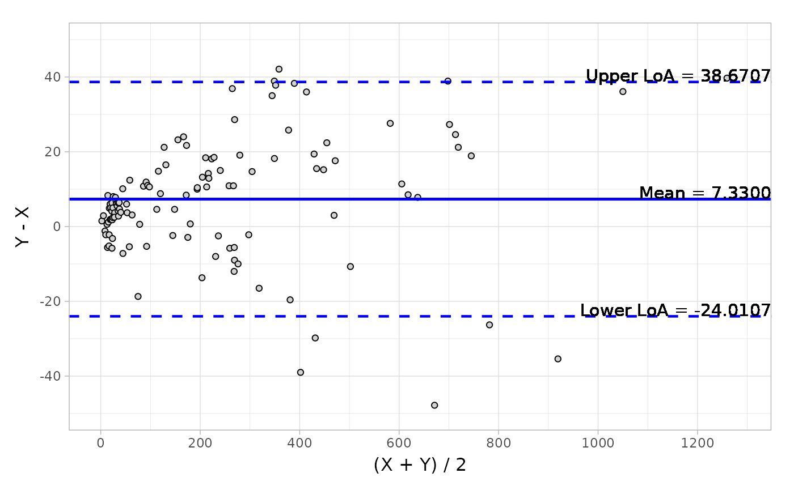
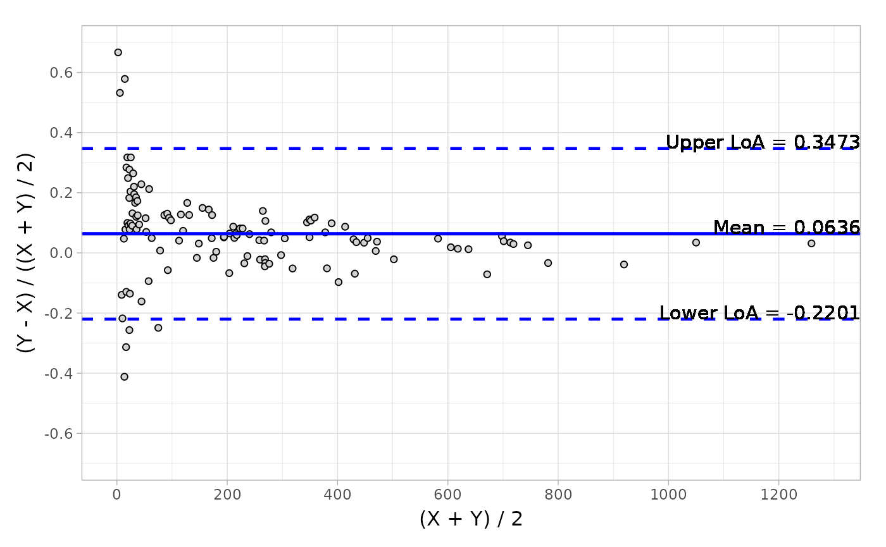
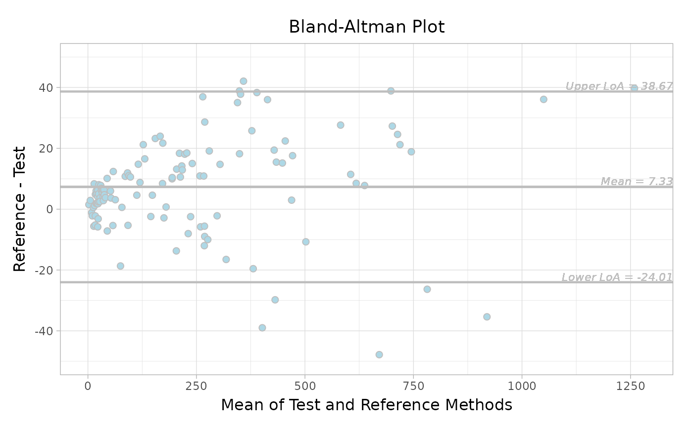
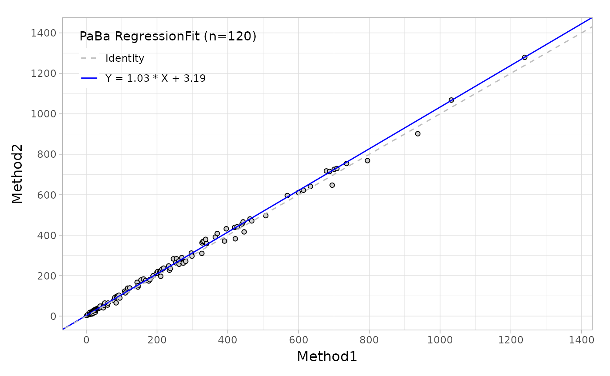
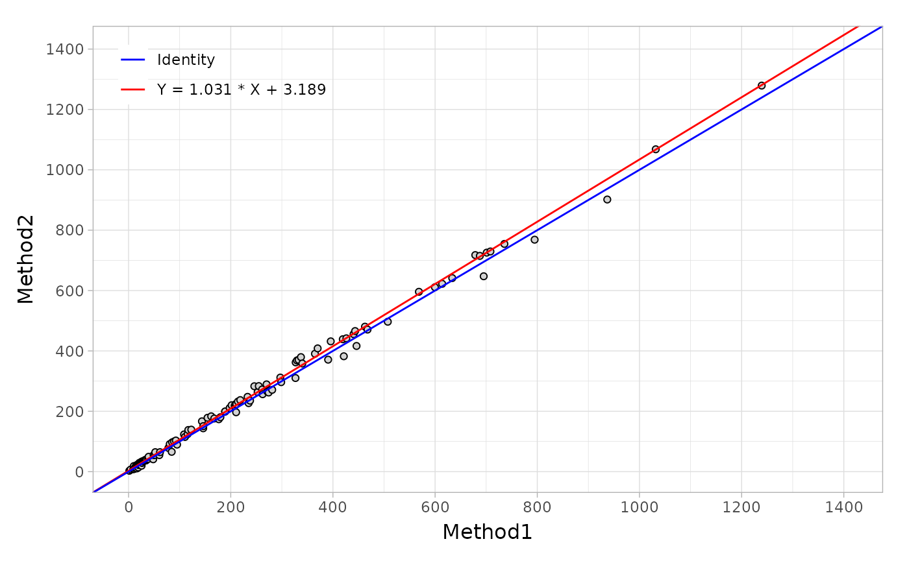

Introduction
This vignette shows the general purpose and usage of the
mcradds R package.
mcradds is a successor of the mcr R package
that is developed by Roche, and therefore the fundamental coding ideas
for method comparison regression have been borrowed from it. In
addition, I supplement a series of useful functions and methods based on
several reference documents from CLSI and NMPA guidance. You can perform
the statistical analysis and graphics in different IVD trials utilizing
these analytical functions.
browseVignettes(package = "mcradds")However, unfortunately these functions and methods have not been validated and QC’ed, I can not guarantee that all of them are entirely proper and error-free. But I always strive to compare the results to other resources in order to obtain a consistent for them. And because some of them were utilized in my past routine workflow, so I believe the quality of this package is temporarily sufficient to use.
In this vignette you are going to learn how to:
- Estimate of sample size for trials, following NMPA guideline.
- Evaluate diagnostic accuracy with/without reference, following CLSI EP12-A2.
- Perform regression methods analysis and plots, following CLSI EP09-A3.
- Perform bland-Altman analysis and plots, following CLSI EP09-A3.
- Detect outliers with 4E method from CLSI EP09-A2 and ESD from CLSI EP09-A3.
- Estimate bias in medical decision level, following CLSI EP09-A3.
- Perform Pearson and Spearman correlation analysis adding hypothesis test and confidence interval.
- Evaluate Reference Range/Interval, following CLSI EP28-A3 and NMPA guideline.
- Add paired ROC/AUC test for superiority and non-inferiority trials, following CLSI EP05-A3/EP15-A3.
- Perform reproducibility analysis (reader precision) for immunohistochemical assays, following CLSI I/LA28-A2 and NMPA guideline.
- Evaluate precision of quantitative measurements, following CLSI EP05-A3.
- Descriptive statistics summary.
The reference of mcradds functions is available on the
mcradds website functions reference.
Common IVD Trials Analyses
Every above analysis purpose can be achieved by few functions or S4
methods from mcradds package, I will present the general
usage below.
The packages used in this vignette are:
The data sets with different purposes used in this vignette are:
data("qualData")
data("platelet")
data(creatinine, package = "mcr")
data("calcium")
data("ldlroc")
data("PDL1RP")
data("glucose")
data("adsl_sub")Estimation of Sample Size
Example 1.1
Suppose that the expected sensitivity criteria of an new assay is
0.9, and the clinical acceptable criteria is
0.85. If we conduct a two-sided normal Z-test at a
significance level of α = 0.05 and achieve a power of 80%,
the total sample is 363.
size_one_prop(p1 = 0.9, p0 = 0.85, alpha = 0.05, power = 0.8)
#>
#> Sample size determination for one Proportion
#>
#> Call: size_one_prop(p1 = 0.9, p0 = 0.85, alpha = 0.05, power = 0.8)
#>
#> optimal sample size: n = 363
#>
#> p1:0.9 p0:0.85 alpha:0.05 power:0.8 alternative:two.sidedExample 1.2
Suppose that the expected sensitivity criteria of an new assay is
0.85, and the lower 95% confidence interval of Wilson Score
at a significance level of α = 0.05 for criteria is
0.8, the total sample is 246.
size_ci_one_prop(p = 0.85, lr = 0.8, alpha = 0.05, method = "wilson")
#>
#> Sample size determination for a Given Lower Confidence Interval
#>
#> Call: size_ci_one_prop(p = 0.85, lr = 0.8, alpha = 0.05, method = "wilson")
#>
#> optimal sample size: n = 246
#>
#> p:0.85 lr:0.8 alpha:0.05 interval:c(1, 1e+05) tol:1e-05 alternative:two.sided method:wilsonIf we don’t want to use the CI of Wilson Score just following the
NMPA’s suggestion in the appendix, the CI of Simple-asymptotic is
recommended with the 196 of sample size, as shown
below.
size_ci_one_prop(p = 0.85, lr = 0.8, alpha = 0.05, method = "simple-asymptotic")
#>
#> Sample size determination for a Given Lower Confidence Interval
#>
#> Call: size_ci_one_prop(p = 0.85, lr = 0.8, alpha = 0.05, method = "simple-asymptotic")
#>
#> optimal sample size: n = 196
#>
#> p:0.85 lr:0.8 alpha:0.05 interval:c(1, 1e+05) tol:1e-05 alternative:two.sided method:simple-asymptoticExample 1.3
Suppose that the expected correlation coefficient between test and
reference assays is 0.95, and the clinical acceptable
criteria is 0.9. If we conduct an one-sided test at a
significance level of α = 0.025 and achieve a power of 80%,
the total sample is 64.
size_corr(r1 = 0.95, r0 = 0.9, alpha = 0.025, power = 0.8, alternative = "greater")
#>
#> Sample size determination for testing Pearson's Correlation
#>
#> Call: size_corr(r1 = 0.95, r0 = 0.9, alpha = 0.025, power = 0.8, alternative = "greater")
#>
#> optimal sample size: n = 64
#>
#> r1:0.95 r0:0.9 alpha:0.025 power:0.8 alternative:greaterExample 1.4
Suppose that the expected correlation coefficient between test and
reference assays is 0.9, and the lower 95% confidence
interval at a significance level of α = 0.025 for the
criteria is greater than 0.85, the total sample is
86.
size_ci_corr(r = 0.9, lr = 0.85, alpha = 0.025, alternative = "greater")
#>
#> Sample size determination for a Given Lower Confidence Interval of Pearson's Correlation
#>
#> Call: size_ci_corr(r = 0.9, lr = 0.85, alpha = 0.025, alternative = "greater")
#>
#> optimal sample size: n = 86
#>
#> r:0.9 lr:0.85 alpha:0.025 interval:c(10, 1e+05) tol:1e-05 alternative:greaterDescriptive statistics
Summarize frequency counts and percentages
If you wish to conduct categorical-type summary statistics, such as
counts and percentages for character variables, the
descfreq() function can be a useful approach to save time
manipulating data and presenting it, especially during the QC
process.
This function can specify a variety of format types with the
list_valid_format_labels() of the formatters
package, and the default format is xx (xx.x%), which is
quite common in our analysis report. And the Desc object
from adsl_sub function contains two section, the
object@mat is long form data that is easy for
post-processing, and the object@stat is wide form data that
is suited to do presentation as the final table.
adsl_sub %>%
descfreq(
var = "AGEGR1",
bygroup = "TRTP",
format = "xx (xx.x%)"
)
#> Variables: AGEGR1
#> Group By: TRTP
#> # A tibble: 3 × 4
#> VarName Category Placebo Xanomeline
#> <chr> <chr> <chr> <chr>
#> 1 AGEGR1 65-80 29 (48.3%) 45 (75.0%)
#> 2 AGEGR1 <65 10 (16.7%) 5 (8.3%)
#> 3 AGEGR1 >80 21 (35.0%) 10 (16.7%)Moreover if you want to show multiple variables at once, the
var argument also supports a character vector. And the
addtot = TRUE can add a total column based on the entire
data if necessary.
adsl_sub %>%
descfreq(
var = c("AGEGR1", "SEX", "RACE"),
bygroup = "TRTP",
format = "xx (xx.x%)",
addtot = TRUE,
na_str = "0"
)
#> Variables: AGEGR1 SEX RACE
#> Group By: TRTP
#> # A tibble: 3 × 5
#> VarName Category Placebo Xanomeline Total
#> <chr> <chr> <chr> <chr> <chr>
#> 1 AGEGR1 65-80 29 (48.3%) 45 (75.0%) 74 (61.7%)
#> 2 AGEGR1 <65 10 (16.7%) 5 (8.3%) 15 (12.5%)
#> 3 AGEGR1 >80 21 (35.0%) 10 (16.7%) 31 (25.8%)
#> # A tibble: 3 × 5
#> VarName Category Placebo Xanomeline Total
#> <chr> <chr> <chr> <chr> <chr>
#> 1 RACE BLACK OR AFRICAN AMERICAN 3 (5.0%) 6 (10.0%) 9 (7.5%)
#> 2 RACE WHITE 57 (95.0%) 53 (88.3%) 110 (91.7%)
#> 3 RACE AMERICAN INDIAN OR ALASKA NATIVE 0 1 (1.7%) 1 (0.8%)
#> # A tibble: 2 × 5
#> VarName Category Placebo Xanomeline Total
#> <chr> <chr> <chr> <chr> <chr>
#> 1 SEX F 39 (65.0%) 30 (50.0%) 69 (57.5%)
#> 2 SEX M 21 (35.0%) 30 (50.0%) 51 (42.5%)Summarize univariate statistics
The descvar() function can conduct univariate-type
summary statistics for numeric variables, such as MEAN,
MEDIAN and SD. It also has similar arguments
and object with descfreq() function, but
includes a set of statistics for your choices, see
?descvar.
If you just want to see the default
statistics(getOption("mcradds.stats.default")) for one
variable like AGE, an example as shown below.
adsl_sub %>%
descvar(
var = "AGE",
bygroup = "TRTP"
)
#> Variables: AGE
#> Group By: TRTP
#> # A tibble: 6 × 4
#> VarName label Placebo Xanomeline
#> <chr> <chr> <chr> <chr>
#> 1 AGE N 60 60
#> 2 AGE MEAN 75.2 74.6
#> 3 AGE SD 8.96 7.06
#> 4 AGE MEDIAN 76.0 75.5
#> 5 AGE MAX 89 88
#> 6 AGE MIN 52 56Besides it can support multiple variables as well, and specific
statistics such as MEAN (SD), RANGE,
IQR, MEDIQR and so on. And regarding to the
decimal precision that has been defined with a default option, but it
can also be adjusted with the decimal argument.
adsl_sub %>%
descvar(
var = c("AGE", "BMIBL", "HEIGHTBL"),
bygroup = "TRTP",
stats = c("N", "MEANSD", "MEDIAN", "RANGE", "IQR"),
autodecimal = TRUE,
addtot = TRUE
)
#> Variables: AGE BMIBL HEIGHTBL
#> Group By: TRTP
#> # A tibble: 5 × 5
#> VarName label Placebo Xanomeline Total
#> <chr> <chr> <chr> <chr> <chr>
#> 1 AGE N 60 60 120
#> 2 AGE MEANSD 75.2 (8.96) 74.6 (7.06) 74.9 (8.04)
#> 3 AGE MEDIAN 76.0 75.5 76.0
#> 4 AGE RANGE 52, 89 56, 88 52, 89
#> 5 AGE IQR 69.0, 83.0 71.0, 79.0 69.0, 81.0
#> # A tibble: 5 × 5
#> VarName label Placebo Xanomeline Total
#> <chr> <chr> <chr> <chr> <chr>
#> 1 BMIBL N 60 60 120
#> 2 BMIBL MEANSD 23.30 (3.614) 25.74 (4.131) 24.52 (4.055)
#> 3 BMIBL MEDIAN 22.65 25.25 24.30
#> 4 BMIBL RANGE 15.1, 33.3 15.3, 34.5 15.1, 34.5
#> 5 BMIBL IQR 21.05, 25.05 22.85, 28.05 21.80, 27.25
#> # A tibble: 5 × 5
#> VarName label Placebo Xanomeline Total
#> <chr> <chr> <chr> <chr> <chr>
#> 1 HEIGHTBL N 60 60 120
#> 2 HEIGHTBL MEANSD 162.20 (10.883) 165.12 (10.542) 163.66 (10.769)
#> 3 HEIGHTBL MEDIAN 162.60 165.10 164.15
#> 4 HEIGHTBL RANGE 137.2, 185.4 146.1, 190.5 137.2, 190.5
#> 5 HEIGHTBL IQR 153.65, 170.20 154.90, 172.70 154.90, 171.50Evaluation of Diagnostic Accuracy
Create 2x2 contingency table
Assume that you have a wide structure data like qualData
contains the measurements of candidate and comparative assays.
head(qualData)
#> Sample ComparativeN CandidateN
#> 1 ID1 1 1
#> 2 ID2 1 0
#> 3 ID3 0 0
#> 4 ID4 1 0
#> 5 ID5 1 1
#> 6 ID6 1 1In this scenario, you’d better define the formula with
candidate assay first, followed by comparative assay to the right of
formula, such as right of ~. If not, you should add the
dimname argument to indicate which the row and column names
2x2 contingency table, and then define the order of levels you prefer
to.
tb <- qualData %>%
diagTab(
formula = ~ CandidateN + ComparativeN,
levels = c(1, 0)
)
tb
#> Contingency Table:
#>
#> levels: 1 0
#> ComparativeN
#> CandidateN 1 0
#> 1 122 8
#> 0 16 54Assume that there is a long structure data needs to be summarized, a dummy data is shown below. The formula should be define in another format. The left of formula is the type of assay, and the right of it is the measurement.
dummy <- data.frame(
id = c("1001", "1001", "1002", "1002", "1003", "1003"),
value = c(1, 0, 0, 0, 1, 1),
type = c("Test", "Ref", "Test", "Ref", "Test", "Ref")
) %>%
diagTab(
formula = type ~ value,
bysort = "id",
dimname = c("Test", "Ref"),
levels = c(1, 0)
)
dummy
#> Contingency Table:
#>
#> levels: 1 0
#> Ref
#> Test 1 0
#> 1 1 1
#> 0 0 1With Reference/Gold Standard
Next step is to utilize the getAccuracy method to
calculate the diagnostic accuracy. If the reference assay is gold
standard, the argument ref should be r which
means ‘reference’. The output will present several indicators,
sensitivity (sens), specificity (spec),
positive/negative predictive value (ppv/npv)
and positive/negative likelihood ratio
(plr/nlr). More details can been found in
?getAccuracy.
# Default method is Wilson score, and digit is 4.
tb %>% getAccuracy(ref = "r")
#> EST LowerCI UpperCI
#> sens 0.8841 0.8200 0.9274
#> spec 0.8710 0.7655 0.9331
#> ppv 0.9385 0.8833 0.9685
#> npv 0.7714 0.6605 0.8541
#> plr 6.8514 3.5785 13.1181
#> nlr 0.1331 0.0832 0.2131
# Alter the number of digit to 2.
tb %>% getAccuracy(ref = "r", digit = 2)
#> EST LowerCI UpperCI
#> sens 0.88 0.82 0.93
#> spec 0.87 0.77 0.93
#> ppv 0.94 0.88 0.97
#> npv 0.77 0.66 0.85
#> plr 6.85 3.58 13.12
#> nlr 0.13 0.08 0.21
# Alter the number of digit to 2.
tb %>% getAccuracy(ref = "r", r_ci = "clopper-pearson")
#> EST LowerCI UpperCI
#> sens 0.8841 0.8186 0.9323
#> spec 0.8710 0.7615 0.9426
#> ppv 0.9385 0.8823 0.9731
#> npv 0.7714 0.6555 0.8633
#> plr 6.8514 3.5785 13.1181
#> nlr 0.1331 0.0832 0.2131Without Reference/Gold Standard
If the reference assay is not the gold standard, for example, a
comparative assay that has been approved for market sale, the
ref should be nr which means ‘not reference’.
The output will present the indicators, positive/negative percent
agreement (ppa/npa) and overall percent
agreement (opa).
# When the reference is a comparative assay, not gold standard.
tb %>% getAccuracy(ref = "nr", nr_ci = "wilson")
#> EST LowerCI UpperCI
#> ppa 0.8841 0.8200 0.9274
#> npa 0.8710 0.7655 0.9331
#> opa 0.8800 0.8277 0.9180
#> kappa 0.7291 0.6283 0.8299Regression coefficient and bias in medical decision level
Estimating Regression coefficient
Regression agreement is a very important criteria in method
comparison trials that can be achieved by mcr package that
has provided a series of regression methods, such as ‘Deming’,
‘Passing-Bablok’,’ weighted Deming’ and so on. The main and key
functions have been wrapped in the mcradds, such as
mcreg, getCoefficients and
calcBias. If you would like to utilize the entire functions
in mcr package, just adding the specific package name in
front of each of them, like mcr::calcBias(), so that it
looks the function is called from mcr package.
# Deming regression
fit <- mcreg(
x = platelet$Comparative, y = platelet$Candidate,
error.ratio = 1, method.reg = "Deming", method.ci = "jackknife"
)
#> Jackknife based calculation of standard error and confidence intervals according to Linnet's method.
printSummary(fit)
#>
#>
#> ------------------------------------------
#>
#> Reference method: Method1
#> Test method: Method2
#> Number of data points: 120
#>
#> ------------------------------------------
#>
#> The confidence intervals are calculated with jackknife (Linnet's) method.
#> Confidence level: 95%
#> Error ratio: 1
#>
#> ------------------------------------------
#>
#> DEMING REGRESSION FIT:
#>
#> EST SE LCI UCI
#> Intercept 4.335885 1.568968372 1.2289002 7.442869
#> Slope 1.012951 0.009308835 0.9945175 1.031386
#>
#>
#> ------------------------------------------
#>
#> JACKKNIFE SUMMARY
#>
#> EST Jack.Mean Bias Jack.SE
#> Intercept 4.335885 4.336377 4.918148e-04 1.568968372
#> Slope 1.012951 1.012950 -1.876312e-06 0.009308835
#> NULL
getCoefficients(fit)
#> EST SE LCI UCI
#> Intercept 4.335885 1.568968372 1.2289002 7.442869
#> Slope 1.012951 0.009308835 0.9945175 1.031386Estimating Bias in Medical Decision Level
Once you have obtained this regression equation, whether ‘Deming’ or
‘Passing-Bablok’, you can use it to estimate the bias in medical
decision level. Suppose that you know the medical decision level of one
assay is 30, obviously this is a make-up number. Then you
can use the fit object above to estimate the bias using
calcBias function.
Bland-Altman Analysis
The Bland-Altman analysis is also an agreement criteria in method comparison trials. And in term of authority’s request, we will normally present two categories: absolute difference and relative difference, in order to evaluate the agreements in both aspects. The outputs are descriptive statistics, including ‘mean’, ‘median’, ‘Q1’, ‘Q3’, ‘min’, ‘max’, ‘CI’ (confidence interval of mean) and ‘LoA’ (Limit of Agreement).
Please make sure the difference type before calculation, answer the
question how to define the absolute and relative difference. More
details information can be found in ?h_difference, where
has five types available as the option. Default is that the absolute
difference is derived by Y-X, and relative difference is
(Y-X)/(0.5*(X+Y)). Sometime if you think the reference
(X) is the gold standard and has a good agreement with test
(Y), the relative difference type can be
type2 = 4.
# Default difference type
blandAltman(
x = platelet$Comparative, y = platelet$Candidate,
type1 = 3, type2 = 5
)
#> Call: blandAltman(x = platelet$Comparative, y = platelet$Candidate,
#> type1 = 3, type2 = 5)
#>
#> Absolute difference type: Y-X
#> Relative difference type: (Y-X)/(0.5*(X+Y))
#>
#> Absolute.difference Relative.difference
#> N 120 120
#> Mean (SD) 7.330 (15.990) 0.064 ( 0.145)
#> Median 6.350 0.055
#> Q1, Q3 ( 0.150, 15.750) ( 0.001, 0.118)
#> Min, Max (-47.800, 42.100) (-0.412, 0.667)
#> Limit of Agreement (-24.011, 38.671) (-0.220, 0.347)
#> Confidence Interval of Mean ( 4.469, 10.191) ( 0.038, 0.089)
# Change relative different type to 4.
blandAltman(
x = platelet$Comparative, y = platelet$Candidate,
type1 = 3, type2 = 4
)
#> Call: blandAltman(x = platelet$Comparative, y = platelet$Candidate,
#> type1 = 3, type2 = 4)
#>
#> Absolute difference type: Y-X
#> Relative difference type: (Y-X)/X
#>
#> Absolute.difference Relative.difference
#> N 120 120
#> Mean (SD) 7.330 (15.990) 0.078 ( 0.173)
#> Median 6.350 0.056
#> Q1, Q3 ( 0.150, 15.750) ( 0.001, 0.125)
#> Min, Max (-47.800, 42.100) (-0.341, 1.000)
#> Limit of Agreement (-24.011, 38.671) (-0.261, 0.417)
#> Confidence Interval of Mean ( 4.469, 10.191) ( 0.047, 0.109)Detecting Outliers
As we all know, there are numerous statistical methodologies to detect the outliers. Here I try to show which methods will be commonly used in IVD trials with different purposes.
First and foremost, only quantitative data will generate outliers, so the detecting process only occurred in quantitative trials. And then in the method comparison trials, the detected outliers will be used for sensitive analysis in common. For example, if you detect 5 outliers in a 200 subjects trial, you should conduct a sensitive analysis with and without outliers to interpret there is no difference in both scenarios. Here there are two CLSI’s recommended approaches,4E and ESD, wit the latter one being recommended in the most recent version.
In mcradds package, you can utilize the
getOutlier method to detect outliers with the
method argument to define the which method you’d like, and
difference arguments for which difference type like
‘absolute’ or ‘relative’ would be used.
# ESD approach
ba <- blandAltman(x = platelet$Comparative, y = platelet$Candidate)
out <- getOutlier(ba, method = "ESD", difference = "rel")
out$stat
#> i Mean SD x Obs ESDi Lambda Outlier
#> 1 1 0.06356753 0.1447540 0.6666667 1 4.166372 3.445148 TRUE
#> 2 2 0.05849947 0.1342496 0.5783972 4 3.872621 3.442394 TRUE
#> 3 3 0.05409356 0.1258857 0.5321101 2 3.797226 3.439611 TRUE
#> 4 4 0.05000794 0.1183096 -0.4117647 10 3.903086 3.436800 TRUE
#> 5 5 0.05398874 0.1106738 -0.3132530 14 3.318236 3.433961 FALSE
#> 6 6 0.05718215 0.1056542 -0.2566372 23 2.970250 3.431092 FALSE
out$outmat
#> sid x y
#> 1 1 1.5 3.0
#> 2 2 4.0 6.9
#> 3 4 10.2 18.5
#> 4 10 16.4 10.8
# 4E approach
ba2 <- blandAltman(x = creatinine$serum.crea, y = creatinine$plasma.crea)
out2 <- getOutlier(ba2, method = "4E")
out2$stat
#> obs abs abs_limit_lr abs_limit_ur rel rel_limit_lr rel_limit_ur
#> 4 4 0.49 -0.2988882 0.3142586 0.4644550 -0.2748149 0.2734674
#> 51 51 -0.31 -0.2988882 0.3142586 -0.3054187 -0.2748149 0.2734674
#> 96 96 0.39 -0.2988882 0.3142586 0.3466667 -0.2748149 0.2734674
#> 97 97 0.44 -0.2988882 0.3142586 0.3859649 -0.2748149 0.2734674
#> 106 106 0.36 -0.2988882 0.3142586 0.3302752 -0.2748149 0.2734674
#> 108 108 0.32 -0.2988882 0.3142586 0.3333333 -0.2748149 0.2734674
#> Outlier
#> 4 TRUE
#> 51 TRUE
#> 96 TRUE
#> 97 TRUE
#> 106 TRUE
#> 108 TRUE
out2$outmat
#> sid x y
#> 1 4 0.81 1.30
#> 2 51 1.17 0.86
#> 3 96 0.93 1.32
#> 4 97 0.92 1.36
#> 5 106 0.91 1.27
#> 6 108 0.80 1.12In addition, mcradds also provides outlier methods for
evaluating Reference Range, such as ‘Tukey’ and ‘Dixon’ that have been
wrapped in refInterval() function.
Hypothesis of Pearson and Spearman
The correlation coefficient of Pearson is a helpful criteria for
assessing the agreement between test and reference assays. To compute
the coefficient and P value in R, the cor.test() function
is commonly used. However the P value relies on the hypothesis of
H0=0, which doesn’t meet the requirement from authority.
Because we are required to provide the P value with H0=0.7
sometimes. Thus in this case, I suggest you should use the
pearsonTest() function instead, and the hypothesis is based
on Fisher’s Z transformation of the correlation.
x <- c(44.4, 45.9, 41.9, 53.3, 44.7, 44.1, 50.7, 45.2, 60.1)
y <- c(2.6, 3.1, 2.5, 5.0, 3.6, 4.0, 5.2, 2.8, 3.8)
pearsonTest(x, y, h0 = 0.5, alternative = "greater")
#> $stat
#> cor lowerci upperci Z pval
#> 0.5711816 -0.1497426 0.8955795 0.2448722 0.4032777
#>
#> $method
#> [1] "Pearson's correlation"
#>
#> $conf.level
#> [1] 0.95Since the cor.test() function can not provide the
confidence interval and special hypothesis for Spearman, the
spearmanTest() function is recommended. This function
computes the CI using bootstrap method, and the hypothesis is based on
Fisher’s Z transformation of the correlation, but with the variance
proposed by Bonett and Wright (2000), not the same as Pearson’s.
x <- c(44.4, 45.9, 41.9, 53.3, 44.7, 44.1, 50.7, 45.2, 60.1)
y <- c(2.6, 3.1, 2.5, 5.0, 3.6, 4.0, 5.2, 2.8, 3.8)
spearmanTest(x, y, h0 = 0.5, alternative = "greater")
#> $stat
#> cor lowerci upperci Z pval
#> 0.6000000 -0.1282051 0.9826087 0.3243526 0.3728355
#>
#> $method
#> [1] "Spearman's correlation"
#>
#> $conf.level
#> [1] 0.95Establishing Reference Range/Interval
The refInterval function provides two outlier methods
Tukey and Dixon, and three methods mentioned
in CLSI to establish the reference interval (RI).
The first is parametric method that follows the normal distribution to compute the confidence interval.
refInterval(x = calcium$Value, RI_method = "parametric", CI_method = "parametric")
#>
#> Reference Interval Method: parametric, Confidence Interval Method: parametric
#>
#> Call: refInterval(x = calcium$Value, RI_method = "parametric", CI_method = "parametric")
#>
#> N = 240
#> Outliers: NULL
#> Reference Interval: 9.05, 10.32
#> RefLower Confidence Interval: 8.9926, 9.1100
#> Refupper Confidence Interval: 10.2584, 10.3757The second one is nonparametric method that computes the 2.5th and 97.5th percentile if the range of reference interval is 95%.
refInterval(x = calcium$Value, RI_method = "nonparametric", CI_method = "nonparametric")
#>
#> Reference Interval Method: nonparametric, Confidence Interval Method: nonparametric
#>
#> Call: refInterval(x = calcium$Value, RI_method = "nonparametric", CI_method = "nonparametric")
#>
#> N = 240
#> Outliers: NULL
#> Reference Interval: 9.10, 10.30
#> RefLower Confidence Interval: 8.9000, 9.2000
#> Refupper Confidence Interval: 10.3000, 10.4000The third one is robust method, which is slightly complicated and involves an iterative procedure based on the formulas in EP28A3. And the observations are weighted according to their distance from the central tendency that is initially estimated by median and MAD(the median absolute deviation).
refInterval(x = calcium$Value, RI_method = "robust", CI_method = "boot")
#> Bootstrape process could take a short while.
#>
#> Reference Interval Method: robust, Confidence Interval Method: boot
#>
#> Call: refInterval(x = calcium$Value, RI_method = "robust", CI_method = "boot")
#>
#> N = 240
#> Outliers: NULL
#> Reference Interval: 9.04, 10.32
#> RefLower Confidence Interval: 8.9793, 9.0973
#> Refupper Confidence Interval: 10.2572, 10.3748The first two methods are also accepted by NMPA guideline, but the robust method is not recommended by NMPA because if you want to establish a reference interval for your assay, you must collect the at least 120 samples in China. If the number is less than 120, it can not ensure the accuracy of the results. The CLSI working group is hesitant to recommend this method as well, except in the most extreme instances.
By default, the confidence interval (CI) will be presented depending on which RI method is utilized.
- If the RI method is
parametric, the CI method should beparametricas well. - If the RI method is
nonparametricand the sample size is up to 120 observations, thenonparametricof CI is suggested. Otherwise if the sample size is below to 120, thebootmethod of CI is the better choice. You need to be aware that thenonparametricmethod for CI only allows therefLevel = 0.95andconfLevel = 0.9arguments, if not thebootmethods of CI will be used automatically. - If the RI method is
robustmethod, the method of CI must beboot.
If you would like to compute the 90% reference interval rather than
90%, just alter refLevel = 0.9. So the confidence interval
is similar to be altered to confLevel = 0.95 if you would
like compute the 95% confidence interval for each limit of reference
interval.
Paired AUC Test
The aucTest function compares two AUC of paired
two-sample diagnostic assays using the standardized difference method,
which has a small difference in SE computation when compared to unpaired
design. Because the samples in a paired design are not considered
independent, the SE can not be computed directly by the Delong’s method
in pROC package.
In order to evaluate two paired assays, the aucTest
function has three assessment methods including ‘difference’,
‘non-inferiority’ and ‘superiority’, as shown in Liu(2006)’s article
below.
Jen-Pei Liu (2006) “Tests of equivalence and non-inferiority for diagnostic accuracy based on the paired areas under ROC curves”. Statist. Med., 25:1219–1238. DOI: 10.1002/sim.2358.
Suppose that you want to compare the paired AUC from OxLDL and LDL
assays in ldlroc data set, and the null hypothesis is there
is no difference of AUC area.
# H0 : Difference between areas = 0:
aucTest(x = ldlroc$LDL, y = ldlroc$OxLDL, response = ldlroc$Diagnosis)
#> Setting levels: control = 0, case = 1
#> Setting direction: controls < cases
#>
#> The hypothesis for testing difference based on Paired ROC curve
#>
#> Test assay:
#> Area under the curve: 0.7995
#> Standard Error(SE): 0.0620
#> 95% Confidence Interval(CI): 0.6781-0.9210 (DeLong)
#>
#> Reference/standard assay:
#> Area under the curve: 0.5617
#> Standard Error(SE): 0.0836
#> 95% Confidence Interval(CI): 0.3979-0.7255 (DeLong)
#>
#> Comparison of Paired AUC:
#> Alternative hypothesis: the difference in AUC is difference to 0
#> Difference of AUC: 0.2378
#> Standard Error(SE): 0.0790
#> 95% Confidence Interval(CI): 0.0829-0.3927 (standardized differenec method)
#> Z: 3.0088
#> Pvalue: 0.002623Suppose that you want to see if the OxLDL assay is superior to LDL
assay when the margin is equal to 0.1. In this case the
null hypothesis is the difference is less than 0.1.
# H0 : Superiority margin <= 0.1:
aucTest(
x = ldlroc$LDL, y = ldlroc$OxLDL, response = ldlroc$Diagnosis,
method = "superiority", h0 = 0.1
)
#> Setting levels: control = 0, case = 1
#> Setting direction: controls < cases
#>
#> The hypothesis for testing superiority based on Paired ROC curve
#>
#> Test assay:
#> Area under the curve: 0.7995
#> Standard Error(SE): 0.0620
#> 95% Confidence Interval(CI): 0.6781-0.9210 (DeLong)
#>
#> Reference/standard assay:
#> Area under the curve: 0.5617
#> Standard Error(SE): 0.0836
#> 95% Confidence Interval(CI): 0.3979-0.7255 (DeLong)
#>
#> Comparison of Paired AUC:
#> Alternative hypothesis: the difference in AUC is superiority to 0.1
#> Difference of AUC: 0.2378
#> Standard Error(SE): 0.0790
#> 95% Confidence Interval(CI): 0.0829-0.3927 (standardized differenec method)
#> Z: 1.7436
#> Pvalue: 0.04061Suppose that you want to see if the OxLDL assay is non-inferior to
LDL assay when the margin is equal to -0.1. In this case
the null hypothesis is the difference is less than
-0.1.
# H0 : Non-inferiority margin <= -0.1:
aucTest(
x = ldlroc$LDL, y = ldlroc$OxLDL, response = ldlroc$Diagnosis,
method = "non-inferiority", h0 = -0.1
)
#> Setting levels: control = 0, case = 1
#> Setting direction: controls < cases
#>
#> The hypothesis for testing non-inferiority based on Paired ROC curve
#>
#> Test assay:
#> Area under the curve: 0.7995
#> Standard Error(SE): 0.0620
#> 95% Confidence Interval(CI): 0.6781-0.9210 (DeLong)
#>
#> Reference/standard assay:
#> Area under the curve: 0.5617
#> Standard Error(SE): 0.0836
#> 95% Confidence Interval(CI): 0.3979-0.7255 (DeLong)
#>
#> Comparison of Paired AUC:
#> Alternative hypothesis: the difference in AUC is non-inferiority to -0.1
#> Difference of AUC: 0.2378
#> Standard Error(SE): 0.0790
#> 95% Confidence Interval(CI): 0.0829-0.3927 (standardized differenec method)
#> Z: 4.2739
#> Pvalue: 9.606e-06Reproducibility Analysis (Reader Precision)
In the PDL1 assay trials, we must estimate the reader precision
between different readers or reads or sites, using the APA,
ANA and OPA as the primary endpoint. The
getAccuracy function can implement the computations as the
reader precision trials belong to qualitative trials. The only
distinction is that in this trial, there is no comparative assay, just
each stained specimen will be scored by different pathologists
(readers). So you can not determine which one can be as the reference,
instead that they compare each other in each comparison.
In the PDL1RP example data, 150 specimens were stained
with one PD-L1 assay in three different sites, 50 specimens for each.
For PDL1RP$wtn_reader sub-data, 3 readers were selected
from three different sites and each of them were responsible for scoring
50 specimens once. Thus you might want to evaluate the reproducibility
within three readers through three site.
reader <- PDL1RP$btw_reader
tb1 <- reader %>%
diagTab(
formula = Reader ~ Value,
bysort = "Sample",
levels = c("Positive", "Negative"),
rep = TRUE,
across = "Site"
)
getAccuracy(tb1, ref = "bnr", rng.seed = 12306)
#> EST LowerCI UpperCI
#> apa 0.9479 0.9260 0.9686
#> ana 0.9540 0.9342 0.9730
#> opa 0.9511 0.9311 0.9711For PDL1RP$wtn_reader sub-data, one reader was selected
from three different sites and each of them was responsible for scoring
50 specimens 3 times with a minimum of 2 weeks between reads that means
the process of score. Thus you might want to evaluate the
reproducibility within three reads through all specimens.
read <- PDL1RP$wtn_reader
tb2 <- read %>%
diagTab(
formula = Order ~ Value,
bysort = "Sample",
levels = c("Positive", "Negative"),
rep = TRUE,
across = "Sample"
)
getAccuracy(tb2, ref = "bnr", rng.seed = 12306)
#> EST LowerCI UpperCI
#> apa 0.9442 0.9204 0.9657
#> ana 0.9489 0.9273 0.9681
#> opa 0.9467 0.9244 0.9667For PDL1RP$btw_site sub-data, one reader was selected
from three different sites and all of them were responsible for scoring
150 specimens once, that collected from those three sites. Thus you
might want to evaluate the reproducibility within three site.
site <- PDL1RP$btw_site
tb3 <- site %>%
diagTab(
formula = Site ~ Value,
bysort = "Sample",
levels = c("Positive", "Negative"),
rep = TRUE,
across = "Sample"
)
getAccuracy(tb2, ref = "bnr", rng.seed = 12306)
#> EST LowerCI UpperCI
#> apa 0.9442 0.9204 0.9657
#> ana 0.9489 0.9273 0.9681
#> opa 0.9467 0.9244 0.9667Precision Evaluation
This precision evaluation is not commonly used in IVD trials, but it
is necessary to include this process in end-users laboratories’ QC
procedure for verifying repeatability and within-laboratory precision. I
have wrapped the main and key functions from Roche’s VCA,
as well as the mcr package. It’s recommended to read the
details in ?anovaVCA and ?VCAinference
functions or CLSI-EP05 to help understanding the outputs, such as
CV%.
fit <- anovaVCA(value ~ day / run, glucose)
VCAinference(fit)
#>
#>
#>
#> Inference from (V)ariance (C)omponent (A)nalysis
#> ------------------------------------------------
#>
#> > VCA Result:
#> -------------
#>
#> Name DF SS MS VC %Total SD CV[%]
#> 1 total 64.7773 12.9336 100 3.5963 1.4727
#> 2 day 19 415.8 21.8842 1.9586 15.1432 1.3995 0.5731
#> 3 day:run 20 281 14.05 3.075 23.7754 1.7536 0.7181
#> 4 error 40 316 7.9 7.9 61.0814 2.8107 1.151
#>
#> Mean: 244.2 (N = 80)
#>
#> Experimental Design: balanced | Method: ANOVA
#>
#>
#> > VC:
#> -----
#> Estimate CI LCL CI UCL One-Sided LCL One-Sided UCL
#> total 12.9336 9.4224 18.8614 9.9071 17.7278
#> day 1.9586
#> day:run 3.0750
#> error 7.9000 5.3251 12.9333 5.6673 11.9203
#>
#> > SD:
#> -----
#> Estimate CI LCL CI UCL One-Sided LCL One-Sided UCL
#> total 3.5963 3.0696 4.3430 3.1476 4.2104
#> day 1.3995
#> day:run 1.7536
#> error 2.8107 2.3076 3.5963 2.3806 3.4526
#>
#> > CV[%]:
#> --------
#> Estimate CI LCL CI UCL One-Sided LCL One-Sided UCL
#> total 1.4727 1.257 1.7785 1.2889 1.7242
#> day 0.5731
#> day:run 0.7181
#> error 1.1510 0.945 1.4727 0.9749 1.4138
#>
#>
#> 95% Confidence Level
#> SAS PROC MIXED method used for computing CIsCommon Visualizations
In term of the visualizations of IVD trials, two common plots will be
presented in the clinical reports, Bland-Altman plot and Regression
plot. You don’t use two different functions to draw plots, both of them
have been included in autoplot() function. So these plots
can be obtained by just call autoplot() to an object.
Bland-Altman plot
To generate the Bland-Altman plot, you should create the object from
blandAltman() function and then call autoplot
straightforward where you can choose which Bland-Altman type do you
require, ‘absolute’ or ‘relative’.
object <- blandAltman(x = platelet$Comparative, y = platelet$Candidate)
# Absolute difference plot
autoplot(object, type = "absolute")
# Relative difference plot
autoplot(object, type = "relative")
Add more drawing arguments if you would like to adjust the format.
More detailed arguments can be found in ?autoplot.
autoplot(
object,
type = "absolute",
jitter = TRUE,
fill = "lightblue",
color = "grey",
size = 2,
ref.line.params = list(col = "grey"),
loa.line.params = list(col = "grey"),
label.digits = 2,
label.params = list(col = "grey", size = 3, fontface = "italic"),
x.nbreak = 6,
main.title = "Bland-Altman Plot",
x.title = "Mean of Test and Reference Methods",
y.title = "Reference - Test"
)
Regression plot
To generate the regression plot, you should create the object from
mcreg() function and then call autoplot
straightforward.
fit <- mcreg(
x = platelet$Comparative, y = platelet$Candidate,
method.reg = "PaBa", method.ci = "bootstrap"
)
autoplot(fit)
More arguments can be used as shown below.
autoplot(
fit,
identity.params = list(col = "blue", linetype = "solid"),
reg.params = list(col = "red", linetype = "solid"),
equal.axis = TRUE,
legend.title = FALSE,
legend.digits = 3,
x.title = "Reference",
y.title = "Test"
)
Summary
In summary, mcradds contains multiple functions and
methods for internal statistical analyses or QC procedure in IVD trials.
The design of the package aims to expand the analysis scope of the
mcr package , and give users a lot of flexibility in
meeting their analysis needs. Given this package has not been validated
by the GCP process, it’s not recommended to use this in regulatory
submissions. However it can give the assist for you with the
supplementary analysis needs from the regulatory.
Session Info
Here is the output of sessionInfo() on the system.
#> R version 4.4.1 (2024-06-14)
#> Platform: x86_64-pc-linux-gnu
#> Running under: Ubuntu 22.04.4 LTS
#>
#> Matrix products: default
#> BLAS: /usr/lib/x86_64-linux-gnu/openblas-pthread/libblas.so.3
#> LAPACK: /usr/lib/x86_64-linux-gnu/openblas-pthread/libopenblasp-r0.3.20.so; LAPACK version 3.10.0
#>
#> locale:
#> [1] LC_CTYPE=C.UTF-8 LC_NUMERIC=C LC_TIME=C.UTF-8
#> [4] LC_COLLATE=C.UTF-8 LC_MONETARY=C.UTF-8 LC_MESSAGES=C.UTF-8
#> [7] LC_PAPER=C.UTF-8 LC_NAME=C LC_ADDRESS=C
#> [10] LC_TELEPHONE=C LC_MEASUREMENT=C.UTF-8 LC_IDENTIFICATION=C
#>
#> time zone: UTC
#> tzcode source: system (glibc)
#>
#> attached base packages:
#> [1] stats graphics grDevices datasets utils methods base
#>
#> other attached packages:
#> [1] mcradds_1.1.1
#>
#> loaded via a namespace (and not attached):
#> [1] gld_2.6.6 gtable_0.3.5 xfun_0.47
#> [4] bslib_0.8.0 ggplot2_3.5.1 formatters_0.5.8
#> [7] lattice_0.22-6 numDeriv_2016.8-1.1 vctrs_0.6.5
#> [10] tools_4.4.1 generics_0.1.3 parallel_4.4.1
#> [13] tibble_3.2.1 proxy_0.4-27 fansi_1.0.6
#> [16] highr_0.11 pkgconfig_2.0.3 Matrix_1.7-0
#> [19] data.table_1.16.0 checkmate_2.3.2 desc_1.4.3
#> [22] readxl_1.4.3 lifecycle_1.0.4 rootSolve_1.8.2.4
#> [25] farver_2.1.2 compiler_4.4.1 textshaping_0.4.0
#> [28] Exact_3.3 munsell_0.5.1 htmltools_0.5.8.1
#> [31] DescTools_0.99.56 class_7.3-22 sass_0.4.9
#> [34] yaml_2.3.10 tidyr_1.3.1 pillar_1.9.0
#> [37] pkgdown_2.1.0 nloptr_2.1.1 jquerylib_0.1.4
#> [40] robslopes_1.1.3 MASS_7.3-60.2 cachem_1.1.0
#> [43] boot_1.3-30 nlme_3.1-164 mcr_1.3.3
#> [46] tidyselect_1.2.1 digest_0.6.37 mvtnorm_1.3-1
#> [49] purrr_1.0.2 dplyr_1.1.4 labeling_0.4.3
#> [52] splines_4.4.1 fastmap_1.2.0 grid_4.4.1
#> [55] colorspace_2.1-1 lmom_3.0 expm_1.0-0
#> [58] cli_3.6.3 magrittr_2.0.3 utf8_1.2.4
#> [61] VCA_1.5.1 e1071_1.7-14 withr_3.0.1
#> [64] scales_1.3.0 backports_1.5.0 rmarkdown_2.28
#> [67] httr_1.4.7 lme4_1.1-35.5 cellranger_1.1.0
#> [70] ragg_1.3.2 evaluate_0.24.0 knitr_1.48
#> [73] rlang_1.1.4 Rcpp_1.0.13 glue_1.7.0
#> [76] renv_0.15.5 pROC_1.18.5 rstudioapi_0.16.0
#> [79] minqa_1.2.8 jsonlite_1.8.8 plyr_1.8.9
#> [82] R6_2.5.1 systemfonts_1.1.0 fs_1.6.4